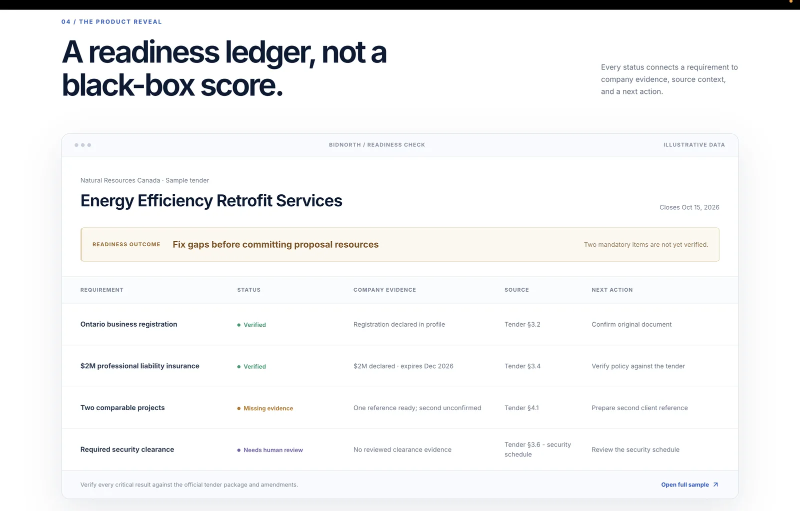
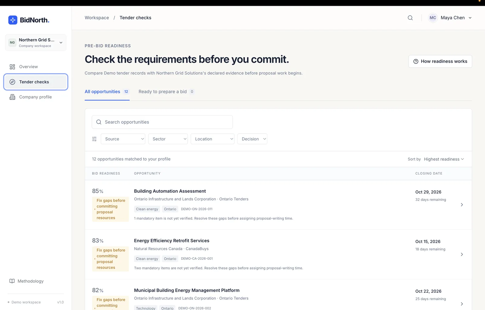

A pre-bid readiness check for Canadian small businesses. It compares a government tender with the evidence a company can actually show and flags disqualifiers before any proposal work begins.
role
Technical architecture and coding
team
2 people
when
September 2026, AF Hacks: Growing Canada
built with
Next.js, TypeScript
result
Top 10 finalist; invited to pitch to the Ascendance Foundry team.
The cover: a sample readiness ledger for an energy-retrofit tender.
what i did
Owned the technical architecture and wrote the code, in a team of two.
Built the check that compares a tender’s requirements with the evidence a business can actually show, so disqualifiers surface before anyone starts writing a proposal.
how it works
A company declares its evidence once: registrations, insurance, past projects, clearances.
Each mandatory requirement in a tender comes back as verified, missing evidence, needs human review, or a hard stop.
The mandatory items gate the result. Any hard stop means “do not commit proposal resources yet”, any gap means “fix gaps first”, and only a fully verified set means “ready to prepare a bid”. A secondary score can never override those gates.
The check is deterministic and unit-tested. An optional AI coach explains each gap in plain language and falls back to built-in guidance when it is unavailable.
where it stands
A hackathon build that proves the idea. The readiness logic works end to end on 12 illustrative tender records modelled on public procurement notices, not live government data, and the interface has not been refined for real users yet.

The readiness ledger: each requirement with its status, the evidence behind it, and the next action.

Tender checks, ranked by how ready the company is to bid.